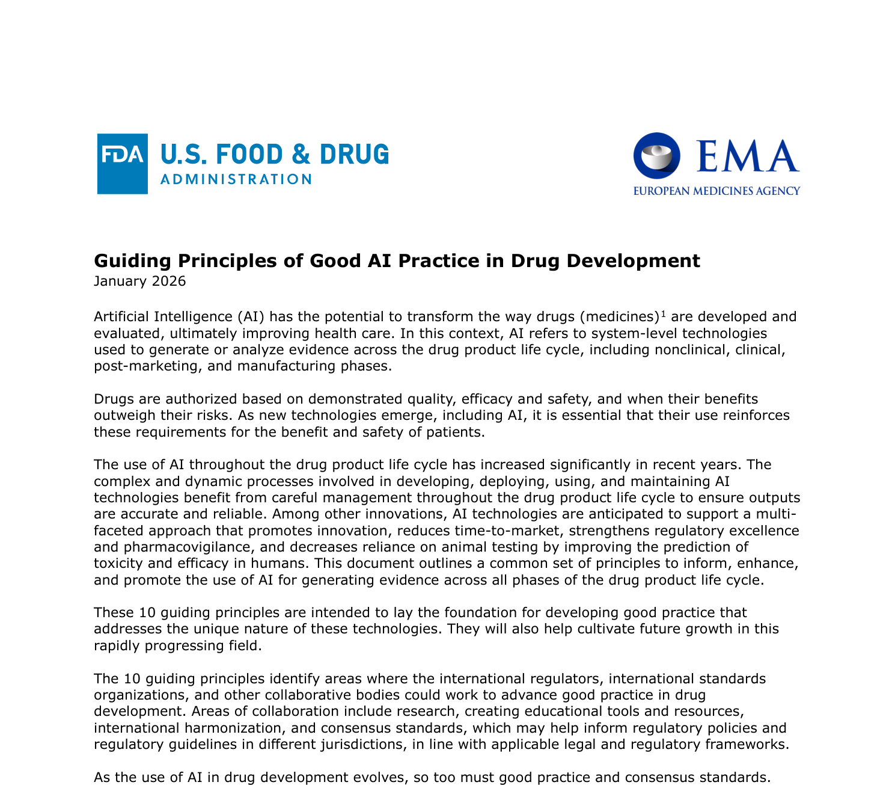

In January 2026, FDA and EMA jointly published 10 guiding principles for AI in drug development. Below is our plan for how Mediforce addresses each principle — what we've built so far, and where we're heading. We welcome your feedback as we work toward this together.

The Guiding Principles of Good AI Practice in Drug Development was published jointly by the U.S. FDA and the European Medicines Agency in January 2026.
This page is a request for comment — our evolving design blueprint for how Mediforce intends to address each principle. Status reflects where we are today in that process, not a finished compliance claim. We welcome feedback as we iterate.
Mediforce is open source — every feature listed here can be inspected in the codebase. If you have thoughts on how we're approaching these principles, join us on Discord.